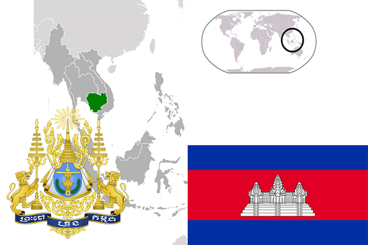

To`liq nomi: Kambodja qirolligi
Region: Janubiy-sharqiy Osiyo
Qonunchilik shakli: Konstitutsion Monarxiya
Mustaqillik kuni: 9-noyabr 1953 yil (Fransiyadan)
Poytaxti: Pnompen
Maydoni: 181 040 km² (dunyoda 88 -o`rinda )
Chegaradosh davlatlari: Tailand, Laos, Vetnam
Aholisi: 15 708 756 (dunyoda 65-o`rinda, 2015 -yil roʻyxat)
Aholi zichligi: 86,8 /km²
Aholining o`rtacha yoshi: 61,35 yil ( 63,4 ayollar, 59,3 erkaklar)
Rasmiy tili: kxmer tili
Dini: buddizm
Pul birligi: ruel va AQSh dollari
Telefon prefiksi: +855
Internet domen: .kh
Xalqaro tashkilotlarga a`zoligi: BMT (1955 –yildan)
Dengiz va okeanlarga chiqishi: Janubiy-Xitoy dengizi
YIM: Butun: $ 54 170 mln, Jon boshiga: $ 3 500 (2015 - yil roʻyxati)
Yirik shaharlari: Pnompen, Takmau